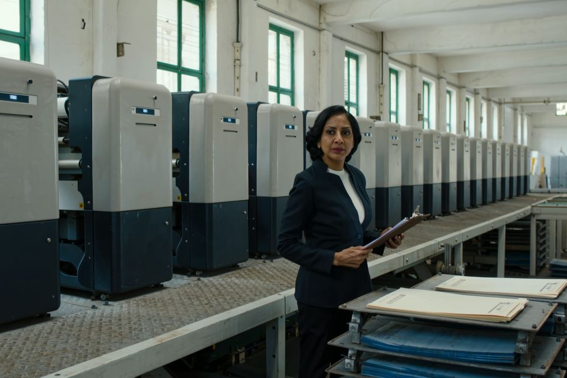

Trusted partnerships. One connected team.
Your international packaging partner.
Connecting brands with competitive manufacturing, technical packaging expertise, quality assurance and end-to-end supply-chain management. United Kingdom, Bangladesh, global.
Packaging sourcing, managed differently.
Averon Global is an international packaging sourcing and supply company helping brands, retailers and businesses develop, source and deliver packaging from competitive manufacturing markets. We combine packaging expertise, international sourcing, manufacturing management, quality assurance and freight and logistics into one professionally managed service.
From the first product specification to the final delivery, Averon coordinates the complete packaging journey: the right materials, production methods, manufacturing route and logistics solution for the requirement. We work with a carefully selected manufacturing network in Bangladesh and connect that capability with international buyers through a single, accountable point of contact.
We don't just source packaging. We manage the journey. One partner, one communication channel, one managed process. You define the requirement; we manage the route from specification to delivery.
A packaging partner, not a sourcing agent.
Not just a supplier, not just a sourcing agent, not just a factory. We connect buyers with manufacturing capability, manage the technical requirements, coordinate production, control quality, manage freight and deliver.
Professional experience across printing, packaging, production, sourcing, costing and manufacturing. We understand the technical realities, not just the commercial transaction.
Bangladesh's cost-competitive manufacturing environment, with defined quality requirements maintained.
A nominated network lets us match each project with the right capabilities, machinery, capacity and certification.
Specifications established before production and quality monitored throughout manufacturing.
Clients work with Averon rather than coordinating directly with multiple factories and production teams.
The supply chain managed beyond the factory gate: shipment planning, freight coordination, documentation and delivery.
Different projects need different manufacturing solutions; the network lets us select the most appropriate route for each requirement.
The objective is not to complete a purchase order but to become part of the client's long-term packaging supply chain.
A competitive packaging manufacturing base.
Bangladesh has developed a substantial export-oriented manufacturing ecosystem supported by skilled labour, experienced production teams and established international supply-chain relationships. For packaging buyers, the opportunity goes beyond labour cost.
Decades of export manufacturing have created a large pool of experienced production, printing, converting, finishing, quality-control and factory-management professionals, and the market supports modern offset printing, corrugated production, converting, finishing and specialist packaging processes. The ecosystem is already familiar with export documentation, buyer requirements, production schedules and international delivery expectations.
Competitive manufacturing cost does not have to mean compromised quality. The objective is to combine Bangladesh's cost advantage with appropriate machinery, experienced teams, defined specifications and controlled quality processes. Local manufacturing advantage; international management.

Cost competitiveness, a skilled workforce, manufacturing capability, export experience, competitive production and growing technical infrastructure.
International sourcing, packaging expertise, technical coordination, quality management, compliance coordination, freight and logistics, client communication.
Local manufacturing advantage with international management. A smarter global packaging supply chain, through one accountable partner.
Five manufacturing routes. One accountable partner.
Averon works with a carefully selected network of five nominated manufacturing partners in Bangladesh, matching each project with the appropriate combination of machinery, capability, capacity, certification, materials, quality requirements, cost and lead time. Partner descriptions follow each company's own published profile.
Genesis Ventures
Established in 1986, a one-stop provider of printing, packaging and apparel trims and accessories for local and international markets. Its published profile highlights modern machinery, advanced technology and international certifications.
Bori Garment Accessories
An export-oriented printing and packaging operation whose published workflow covers design and sampling, CTP, printing, finishing, die-cutting, handwork, inspection, packaging and shipping, with stated export experience to more than 100 countries.
ESAR Paper Industries
An integrated packaging and printing facility: printed corrugated cartons, industrial offset printing, printed and heat-transfer labels, poly bags, hangtags and paper-based packaging, highlighting GRS-certified recycled materials and OEKO-TEX-certified care-label production.
The Uniter Ltd.
A garment accessories manufacturer established in 2020, with product divisions in gum tape, poly bags, leather patches, twill tape and sewing thread, stating certified raw-material sources and ISO, OEKO-TEX and FSC certifications.
Miah & Sons Industries Ltd.
Packaging for FMCG, pharmaceutical, cosmetics, textile, retail, e-commerce and leather: folding cartons, corrugated boxes, heavy-duty cartons, food and pharmaceutical packaging, shoe boxes and printed boxes, with infrastructure described as ISO-certified. The wider Ali Group publishes automatic corrugated lines, flute laminating and die-cutting equipment and Heidelberg and Roland offset presses.
Different factories specialise in different packaging categories.
Projects matched to production capacity and the right machinery platform.
Routes selected per project requirement; alternative routes allow better commercial benchmarking.
A multi-factory network reduces dependency on a single production source.
Certifications are held by individual manufacturing partners and apply according to their specific scope, validity and production category.
Experience behind the service.
Technology creates production capability. Experience creates consistency. The Averon team brings professional experience across printing, packaging, production, sourcing, costing, quality control, factory operations, international trade and freight and logistics.
That lets the team communicate effectively with both sides of the supply chain, the brand's procurement team and the factory's production team, so commercial requirements are translated accurately into production requirements and production results are delivered back as expected.
A trusted international partner connecting brands with competitive, capable and responsible packaging manufacturing, built on trust, quality, technical expertise, commercial intelligence, responsible manufacturing, reliable supply and long-term partnerships.
Make international packaging procurement simpler by combining sourcing, packaging expertise, manufacturing access, quality assurance, compliance and freight and logistics into one professionally managed service.
Some clients prioritise price, others quality, speed, certification, development or reliable logistics. We start with your priorities and build the sourcing strategy around them.
Buyers should not have to choose between competitive cost and quality, manufacturing access and professional management, or Bangladesh and international service standards. Averon brings them together.
What we publish, and what we do not
Client names, project outcomes and metrics are published only when the evidence is documented and approval is confirmed. Partner factories are described from their own published profiles, and certifications are theirs, applied per project.
The people and factory photographs on this site are production references produced for the brand ahead of its own Bangladesh shoot; product photographs are licensed stock that shows the formats. Each file carries its provenance.
Briefs, specifications, commercial terms and the single point of contact.
Five nominated manufacturing partners across printing, finishing and converting, managed on site.
Freight, documentation and delivery to the United Kingdom, Europe, North America and the Middle East.
Tell us what you're working on.
Seven short questions. Answer what you know; we reply with the questions a quotation needs.